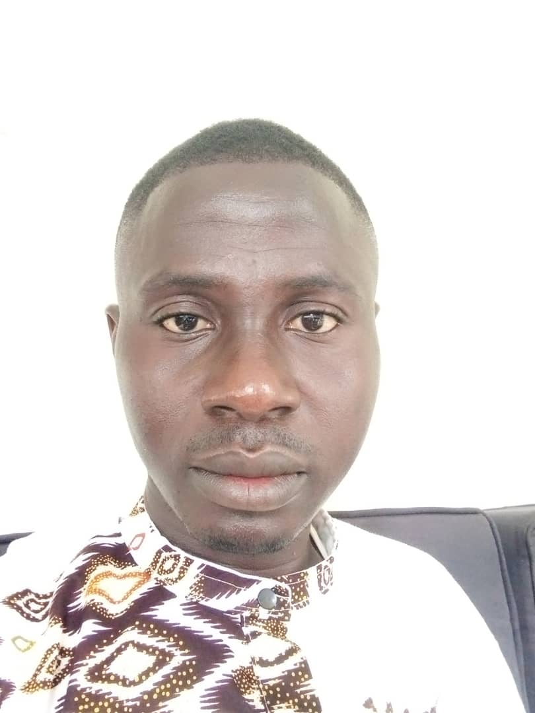

INFORMATICIEN
ETAT CIVIL

KOUASSI LOUKOU YAO CONSTANT
31 ANS
CELIBATAIRE
CEL: 0707473507/0554534709
EMAIL: constantloukou0@gmail.com
CURSUS SCOLAIRE ET UNIVERSITAIRE
-
2014-2015: Brevet de Technicien Superieur(BTS) en informatique developpeur
applications au GROUPE CEFIAT ABIDJAN
-
2011-2012: Baccalaureat au LYCEE MODERNE ARRAH
-
2008-2009: Brevet Etude au Premier Cycle au COLLEGE BOKPLI DE BOCANDA
FORMATIONS
DEVELOPPEMENT WEB, WEB DESIGN
PHP, HTML, CSS
LANGAGE C, VISUAL BASIC
ACESS, WORD, EXCEL
EXPERIENCES PROFESSIONNELLES
De JANVIER 2021 A JUILLET 2021: STAGIAIRE A LIFE EVENT EN TANT QUE COMMERCIAL ORANGE FIBRE
DE DECEMBRE 2017 A DECEMBRE 2020: STAGIAIRE A CALL ME CI EN TANT QUE AGENT BACK OFFICE MTN/OPERATEUR DE SAISIE
DE JUILLET 2016 A DECEMBRE 2017 : STAGIAIRE A IMPRIMERIE KABWOD EN TANT QUE INFORMATICIEN
DE JANVIER A JUIN 2016 : STAGIAIRE A ISYBAT EN TANT QUE GESTIONNAIRE DE STOCKS
DE AOUT A NOVEMBRE 2016 : STAGIAIRE EN TANT QUE DEVELOPPEUR APPLICATIONS A LA TECHNOLOGIE INFORMATIQUE LTI
ATOUTS
DYNAMIQUE
DISPONIBILITE
ESPRIT EQUIPE
PERFECTIONNISTE
INNOVATEUR
GOUT DU DEFI ET DU TRAVAIL BIEN FAIT